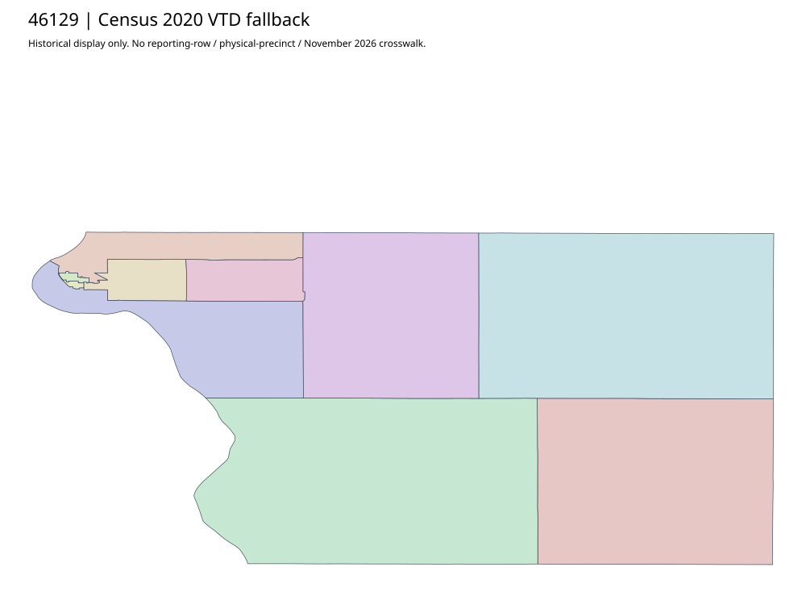

304 ordered indexWalworth | 46129
Official Walworth auditor parent links acquired complete ELECTIONS PDF, an administrative election document rather than boundary geometry. No actual precinct-map original located in the bounded chain. Census2020 complete ten-VTD fallback retained; finer/workbook/current mapping unknown.
2 priority / 10 full historical observations. Parent is a summary ancestor, not additive to leaves. No physical feature matches or current reporting crosswalk approved.
Acquired shared-parent assets
No complete county precinct-map original acquired from this bounded chain. Use qualified fallback; roster/landing/error bodies are retained as evidence.
Administrative/district supplement (not a precinct polygon match): follow-46129-044
Census2020 fallback
10 native historical VTD features. Entire785-feature ZIP original retained once, all66 counties. Yankton has one countywide VTD. No current/reporting allocation. complete original gzip

Full binary/attribute/geometry QA
Observed authority/acquisition routes
Complete SOS authority fields including original blank/masked values: parent inventory. No contacts were sent.
Ordered full children
- Precinct-06 | 462 source votes | priority
- Precinct-07 | 457 source votes | priority
- Precinct-03 | 415 source votes | remainder
- Precinct-05 | 340 source votes | remainder
- Precinct-04 | 172 source votes | remainder
- Precinct-10 | 161 source votes | remainder
- Precinct-02 | 151 source votes | remainder
- Precinct-01 | 137 source votes | remainder
- Precinct-08 | 87 source votes | remainder
- Precinct-09 | 82 source votes | remainder